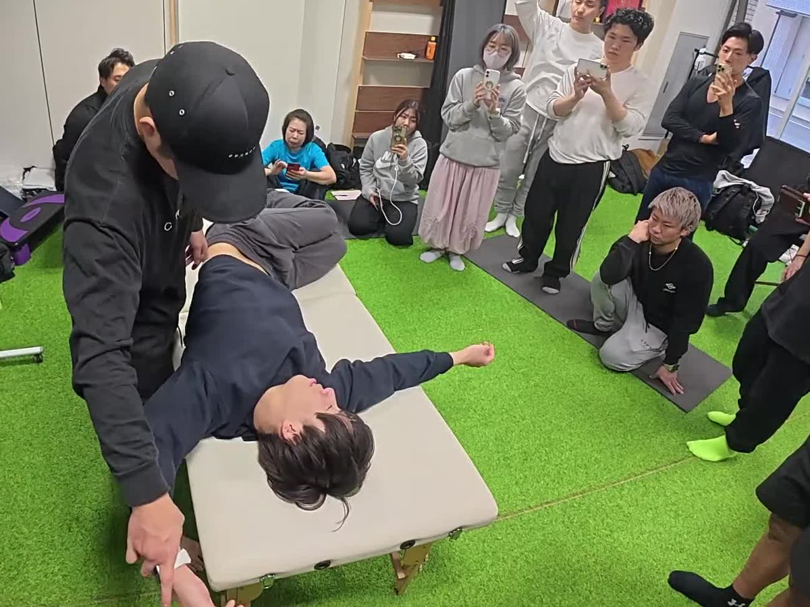
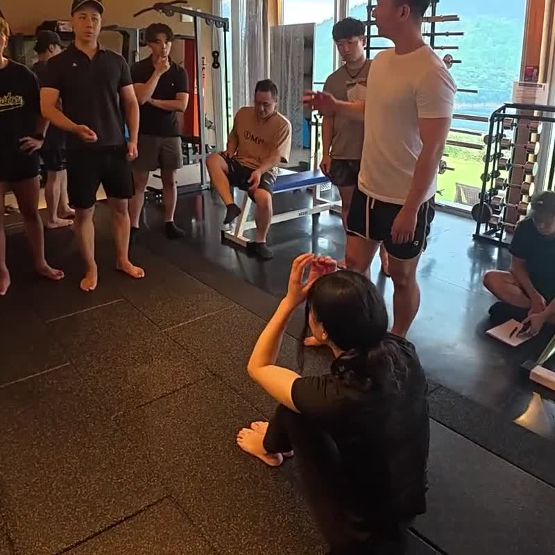

Contact
ご用件に合わせて、窓口をお選びください。

Courses
零式の各講座の受付開始や日程の変更は、零式セミナーの公式LINEでご案内しています。講座の内容・日程は年間セミナーのページでご確認ください。
Certification
制度の考え方や今後のご案内については、認定講師制度の案内ページをご覧ください。
専用の受付窓口を準備しています。公開までしばらくお待ちください。
Corporate
施設や企業での研修、セミナーへの登壇、提携のご相談を承ります。
